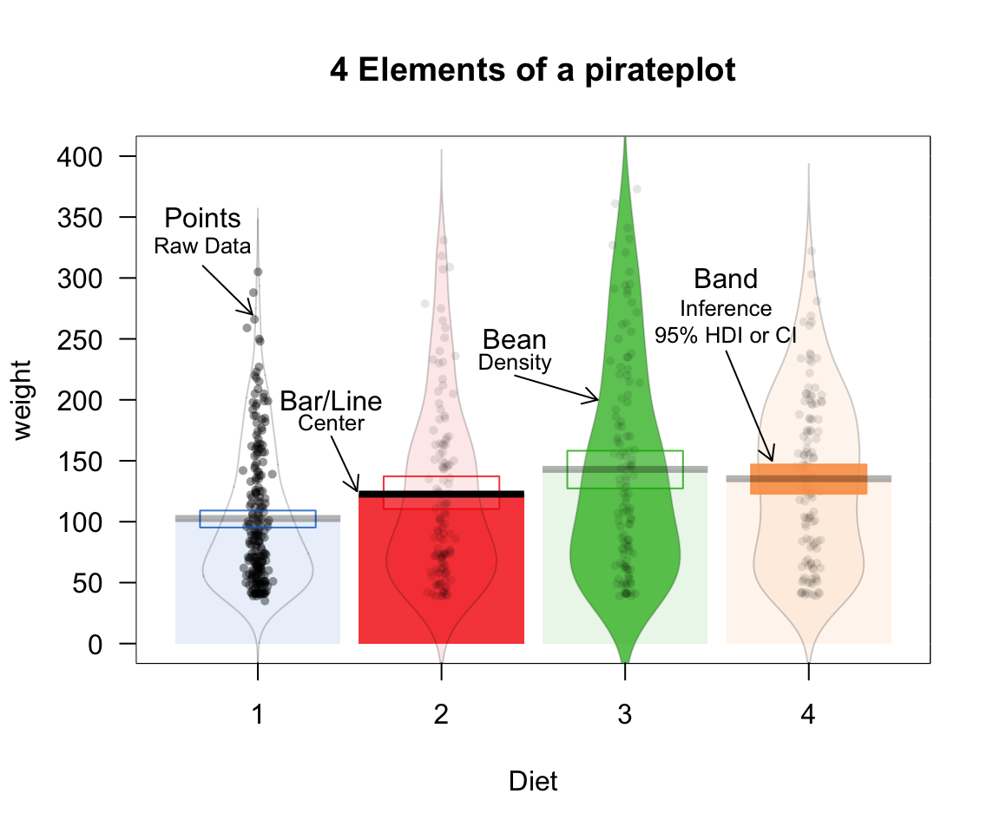
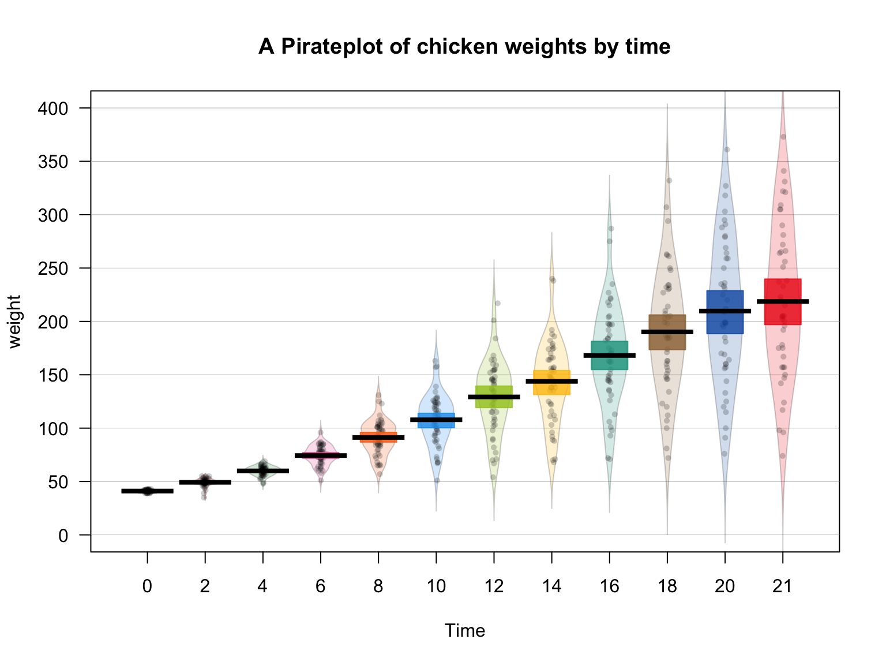
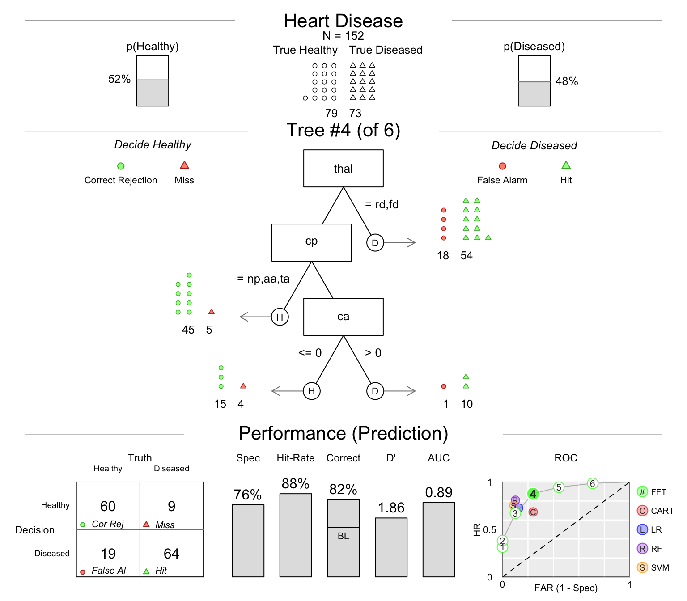

Here is a list of my R packages available either on CRAN or GitHub:
The yarrr package contains a mixture of functions and datasets that support my e-book YaRrr! The pirate’s guide to R. The most notable function in the package is pirateplot(). A pirateplot shows the relationship between a categorical independent variable and a numeric dependent variable. However, in contrast to notoriously deceptive barplots, a pirateplot reveals patterns in data by showing Raw data (as points), Descriptive statistics (as lines and/or bars), and Inferential statistics (as bands).

You can install the most stable version of yarrr from CRAN, or the latest developer version from GitHub as follows:
install.packages("yarrr")
# devtools::install_github("ndphillips/yarrr", build_vignettes = TRUE) # developer versionHere is an example of a pirateplot showing the relationship between the age and weight of chickens:
# Create a pirateplot from the ChickWeight data
yarrr::pirateplot(formula = weight ~ Time,
data = ChickWeight,
main = "A Pirateplot of chicken weights by time")
The pirateplot() function contains many arguments that allow you to easily customise the look of the plot, from the colors, to the element transparencies. To learn more, look at the pirateplot() vignette on CRAN.
The FFTrees package creates fast and frugal decision trees (FFTs). Fast and frugal decision trees are very simple heuristics decision algorithms that, in contrast to regression and more complex algorithms such as random forests and (non-frugal) decision trees, allow people to make fast decisions based on minimal information. FFTs are not just easy to use, they can also predict data as well, if not better, than more complex algorithms such as regression (Gigerenzer and Todd 1999; Martignon, Katsikopoulos, and Woike 2008). Because they are so effective and easy to use and, fast and frugal trees have been used to improve decision making in medical (Green and Mehr 1997; Jenny et al. 2013) and financial (Neth et al. 2014) contexts.
The purpose of FFTrees is to allow anyone to quickly and easily generate, visualise, and use FFTs for their own data.
install.packages("FFTrees")
# devtools::install_github("ndphillips/FFTrees", build_vignettes = TRUE) # developer versionlibrary(FFTrees)
set.seed(100) # For cross validation replication
heart.fft <- FFTrees(formula = diagnosis ~., # formula
data = heartdisease, # dataframe
train.p = .5) # cross validation split
plot(heart.fft, # FFTrees object
main = "Heart Disease", # Plot title
decision.names = c("Healthy", "Diseased"), # Decision names
data = "test") # Show statistics for test data
Gigerenzer, Gerd, and Peter M Todd. 1999. Simple Heuristics That Make Us Smart. Oxford University Press, USA.
Green, Lee, and David R Mehr. 1997. “What Alters Physicians’ Decisions to Admit to the Coronary Care Unit?” Journal of Family Practice 45 (3). [New York, Appleton-Century-Crofts]: 219–26.
Jenny, Mirjam A, Thorsten Pachur, S Lloyd Williams, Eni Becker, and Jürgen Margraf. 2013. “Simple Rules for Detecting Depression.” Journal of Applied Research in Memory and Cognition 2 (3). Elsevier: 149–57.
Martignon, Laura, Konstantinos V Katsikopoulos, and Jan K Woike. 2008. “Categorization with Limited Resources: A Family of Simple Heuristics.” Journal of Mathematical Psychology 52 (6). Elsevier: 352–61.
Neth, Hansjörg, Björn Meder, Amit Kothiyal, and Gerd Gigerenzer. 2014. “Homo Heuristicus in the Financial World: From Risk Management to Managing Uncertainty.” Journal of Risk Management in Financial Institutions 7 (2). Henry Stewart Publications: 134–44.